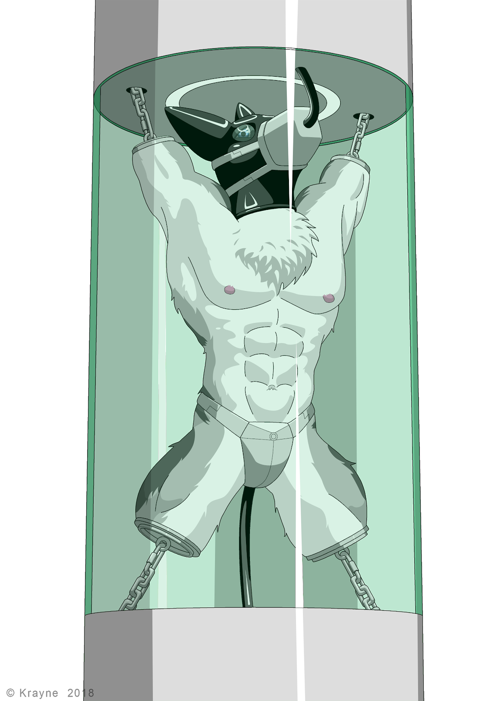

Imprisoned in Limbo
Written by TwistedSnakes
Illustrated by Krayne

An arctic wolf sat huddled in the corner of a steel cell, shivering as its metal walls and floor conducted his body heat away from him. His arms were folded behind him and locked with heavy metal cuffs and a thick, metal collar was electronically locked around his neck. He wasn't supposed to be here. There must have been a misunderstanding. But the judge had ruled otherwise, pinning the blame of crimes most heinous upon him and sentencing him to a lifetime in a high-security prison called Norditch.
Decro had been in this cell for maybe a week or two, but the wolf had long lost count. There was no sign of the outside world in the cell and the only marker of time were the periodic feeding sessions where a dildo would emerge from the wall. He would then have to crawl over and take the whole length of the silicone shaft, closing his maw around the phallus until his lips reached the base of it. Only then would the nutritional mixture flow from the tip, pumped straight down his throat.
How many hours had passed since the last feeding session? How long were the intervals between the sessions anyway? Decro had no clue. All he could do was wait for the "processing" that the guards had promised him, smirking as they did so as if living the rest of his life in prison wasn't punishment enough.
Suddenly, the cell door opened, revealing a rhino and a shark dressed in the guard's sleek black uniform with blue stripes running down their sides. They stepped into the cell and grabbed the wolf, heaving him up from under his arms and pushing him out to the corridor.
Decro shook his head and opened his maw to shout, but no voice came out. The electronic collar had disabled his vocal cords, sparing the guards from going deaf from having to listen to the desperate screams of the prisoners. This, however, did not work out in the wolf's favour. He kicked his feet and looked at the guards pleadingly.
"This is all a misunderstanding! You have to believe me!" he screamed in his head, the only place that his voice could be heard. The rhino snorted and ignored the wolf's attempts at communicating as the two guards continued to drag him down the steel-walled corridors and into a hospital-like room where an operating table stood in the middle. Staff dressed in doctor's coats and aprons were walking purposefully about the room, grabbing surgical tools and medications.
He was pushed over to the operating table and the lizard guard shoved his back, pinning his chest onto it. His arms were uncuffed, but before he could react, he was pushed onto the table and secured in place with numerous metal restraints across his neck, chest, waist, arms, and legs. The staff brought over huge surgical scalpels and electric bone saws on a wheeled trolley as the wolf looked around frantically. He didn't want to be processed!
Everything from that point went by like a blur like a traumatic experience that doesn't want to be remembered.
There was flesh.
And pain. Lots and lots of pain as sharp metal cut into the middle of his upper arm.
Blood was pooling all over the table, getting into his fur.
He was screaming, but his ear-piercing howls existed only in his mind, silenced by the collar.
Bone saw. Whirring sounds as its saw blades came into contact with bone. Then silence. His right arm was no longer a part of him.
Struggling. A desperate attempt to escape from the immense pain that was clouding his vision with red.
And they weren't stopping there. He had three more limbs.
An agonizing eternity passed and his arms and legs were gone.
Decro was thrashing around on the operating table, held in place only by the metal restraints that bound his neck, chest and waist to the table. Everything else only held his now-useless limbs in place, almost as if it were there just to be a mockery of his new form.
There were gloved hands grabbing his tail, pulling it straight out. Scalpel. Bone saw. And his tail was gone too.
The wolf's eyes were filled with nothing but anguish and torment. His consciousness had long retreated into the depths of his mind, leaving behind nothing but a primal psyche that writhed the mutilated body about on the table, opening and closing its mouth in silent screams.
Metal discs with metal rings on them were brought out. Surgical drill. Hands held his body down as screws pierced his bone, securing the plates over Decro's stumps.
Then heat to cauterize his wounds.
What else they did to him, the wolf could no longer remember properly. Or his mind didn't want to remember. All he knew was that his reprieve came as a guard took him off the table, carried him on his shoulder and tossed him unceremoniously into the cell where he hit the ground hard and everything went black.
Decro slowly came to. The cold prison walls were still around him, reminding him of how he'd never taste freedom again. He needed to get up and walk around. To think.
He tried to support himself with his arm, only to hear a clunk of metal against metal as the end of his stump hit the cell floor.
What have they done to him?!
He tried to take stock of his situation, moving what was left of his limbs around as he came to the realization that the prison had deemed fit that he didn't need them anymore.
Around his crotch was a metal plate that went around his back, securing his private part in a triangular shield. A chastity device. It went around his back to his tailhole where a metal probe was shoved deep into him, filling him up. He tried to squeeze his muscles to expel it but the entire device locked the plug deep within him.
As he shifted, he could feel something hard within his unerect member. A catheter in the device had been inserted into his urethra, extending all the way to his bladder. He whimpered silently but no voice came out despite the collar not being around his neck any more. Did they.... no. no, no! They had removed his vocal cords too.
He tried to get up and walk around on all four metal stumps. As his hips moved, the plug in his rear shifted around, pressing against his sensitive insides. Everything about it felt so wrong. He took a few steps forward before stumbling and falling back to the ground. His tail that used to keep him balanced was missing.
He laid helplessly on the cell floor. It wasn't the pain of falling that kept him on the ground; it was the sudden shock that he'd never be the same again that made him want to give up just there and then.
Just then, there was a familiar sound of sliding panels as the feeding dildo emerged from the wall. Come to think of it, he was feeling hungry. He got up and stumbled over to the phallus that was now too high for him to reach. With a grunt, Decro pushed himself up. His front stumps went off the ground but he was only halfway up.
He tried once more, pushing his chest up with his front stumps as his back stumps stepped forward. Almost there! But gravity won out and pulled him back to the ground.
One more try. He got into position and pushed with his might. He was standing! He tried to move around on his twos, but his entire weight supported on metal screws that pierced his bone caused him excruciating pain which shot through his body. Before he knew it, he was falling backwards and his back hit the ground hard. He would not be getting any food this time around.
If not for his missing voice, he would've been making the saddest howls his feeble body could manage. Tears streamed from his eyes and he was helpless to hold them back. Perhaps he would wake up and find out that this was all just a bad dream.
All just a bad dream.
The guards opened the door to the cell, revealing a wolf huddled on the ground, weak from days of not having anything to eat or drink. The prisoner slowly opened his eyes, turning them to the guards and hoping against hope that they could help him.
The rhino stepped into the cell and picked Decro up by the ring on one of his stumps. Pain shot through the wolf's body as his weight pulled against the screw in his bone. He squirmed in the air, opening and closing his mouth as he tried to endure the pain.
"You like that, huh? You filthy criminal," the guard gave him a smug grin.
"Chill off, what did this guy ever do to you?" the lizard reasoned.
"Who says he's got to have done something to me? I just want to have some fun," the rhino turned to the lizard.
"Hey, you do you, man. Just remember that these people have feelings too," the lizard stepped backwards timidly.
"People?" the rhino snorted, "These are not people. These are the scum of the earth. And if we cared about feelings, would we have turned them into these limbless dolls?"
Decro struggled feebly. The pain was unbearable. It was almost as if the screw could be ripped out of his stump at any time. The lizard opened his mouth to say something but the rhino cut him off.
"Not that he needs limbs where he is going," the rhino smirked before lifting the wolf up and resting his body on his shoulder as if he were a sack of rice.
"Let's go," the rhino turned and led the lizard down the corridor.
This time Decro was brought to a room where two circular columns were placed above each other. The first one sat on metal rails on the ground that connected to a chute that led elsewhere. The second one hung from the ceiling on parallel rails, leaving a sizable gap between each one. Hooks and chains dangled from the circular bottom of the ceiling column and from the top of the floor column.
Off to the side, a metal pole stood on a stand. The wolf's body was slowly lowered over it, securing it to the chastity underwear he was wearing. He was now positioned on the pole, supported only by his crotchpiece and the plug filling up his ass.
He squirmed and wriggled his stumps desperately. Whatever was going to happen to him, he didn't like it. He opened and closed his maw desperately, mouthing words nobody could understand. All that came out were his wheezing breaths which were soon cut off as the lizard pressed a metal muzzle over his mouth. A tube within the muzzle was forced into his maw as the straps were fastened behind his head.
Decro felt around the tube with his tongue. He could tell it was hollow, leading to the outside of the muzzle where he poked his tongue out. The rhino guard smirked and pushed his finger into the hole of the muzzle and into the wolf's mouth, fingering it like it was a pussy. Decro drew his tongue back in and squirmed in embarrassment as he felt the guard rape his mouth with his finger.
"Hold his head for me, will you?" the lizard said.
Suddenly, the rhino closed his other hand around Decro's maw, holding it in place as the lizard brought two dark oval lenses. He squeezed glue around the rim of the curved glass before pressing it over Decro's eye like a contact lens.
The wolf wanted to turn his head away and writhe from the pain, but he was totally immobilized. Only his stumps could flail around uselessly. All this while, the rhino continued to tease his mouth and tongue with his finger. His other eye was soon covered by the dark, translucent lens that made his vision dark.
The hands went away and the finger withdrew from his mouth. Before he could react, a metal box was closed around his head. Decro was plunged into darkness as he whimpered. Suddenly, the sensation of hot liquid sprayed all over his head. The burning sensation was agonizing as it seared his fur and skin. He struggled frantically as the two guards watched. A limbless wolf body with a box for its head, thrashing about on its pole support in a desperate attempt for relief.
Inside the head device, Decro's head was coated in a thick layer of liquid rubber. The spray stopped and a cooling system activated, hardening the rubber around his head. The wolf could feel the hardening liquid contract around his head, making the newly-created hood feel constricting.
His vision returned as the device was removed from his head, revealing a black canine head with lenses in place of eyes. Apart from the metal muzzle that kept his mouth open with a circular tube, its form was seamless. The wolf could no longer breathe through his nose so the tube was now his only connection to life.
The guards detached the pole support from below Decro. Fatigued from the agony and struggling, his body hung limply as he was carried over to the two columns and placed between the gap in a standing position.
Chains were linked up with the hook in his two arm stumps, welded in place by an electric welder. The two guards let go of him, leaving him suspended by his two arms. The screws shifted in his bones and pain shot through his body. His body shuddered and he started struggling again.
Please.
Just let me go.
He writhed as two more chains from the base column were looped through his leg stumps and welded in place too. But his squirms were soon stopped as the chains retracted into the columns, pulling his body taut and suspending him in an extremely tight spreadeagle position. The tension in his bones caused his vision to blur as the pain shot through him.
After the pain subsided as he got used to it, Decro felt the screwing of metal as the lizard picked up a black rubber tube and attached it into the back of the wolf's crotchpiece.
"We're cleaning you out," the lizard warned.
With a tap of the control panel, he sent an acidic cleaning agent pumping through the tube and up the wolf's tailhole and bladder. He struggled as the hot and stinging sensation filled his ass, spreading up to his intestines. His bladder felt like it was going to burst as he was filled beyond his comfort zone. The taut chains only allowed his body to shudder a tiny bit and each movement sent pain running through the bones of his limbs.
After a while, he felt the liquid subsiding as the catheter in his urethra and the plug in his tailhole drained it away. The rhino gave Decro a smirk as he grabbed the tube and wriggled it, shifting the thick plug within the wolf.
In the meantime, the lizard grabbed a similar tube that was dangling from the ceiling column. Its end was a hollow rubber nub that would allow the system to pump anything into the prisoner, from nutrition solutions all the way to anguish-inducing chemicals.
The end of the tube was slid into his maw and pushed into his throat. Decro gagged from the inserted tube but his restrained movement resulted in nothing but quick shudders from his body. The wolf could feel the metal end of the tube pushed down his gullet, spreading the soft muscles as it travelled down within him.
It pushed past the sphincter and into his stomach. He could feel it wriggling around him as the lizard forced it in. The metal end finally found his pyloric sphincter and pushed past it, forcing it open as it entered his lower intestine. A rubber bulb at the end of the tube inflated, lodging it in place at the top of his lower intestine.
The outer edge of the tube was sealed in place with more liquid rubber, forming a smooth hood around the wolf's head. Pressing a few keys on a control panel, the excess tube retracted into the upper column, pulling Decro's head upwards so that his neck was craned up.
"We're going to test the feeding system," the lizard informed.
As he tapped a few keys on the control panel, Decro could feel the tube in his body vibrate as a cold liquid sloshed through it and into his lower intestine. The feeling was odd and he could not help but shiver.
"Looks like it works," the guard said, "This will be your life support system for the rest of your existence. I'm going to- what are you doing?"
Decro could hear the two guards talk through his rubber encasement.
"Having a little fun," the rhino's voice replied.
A strange liquid was pumped into the wolf's body. Suddenly, a sweet sensation washed over his body. He felt a strange longing. A craving. He wanted something really badly. His cock started escaping from his sheath, pressed down against his body by the chastity plate.
He whimpered in his mind, embarrassed but also desperate. He wanted, no, needed release. He twisted his hips, rattling the chains that supported him. He could hear the sound of the rhino snorting in amusement. Why were they doing this to him?
He wanted to beg. Beg for the aphrodisiacs to stop. But all he could do was struggle.
"That's a preservative!" the lizard's voice said sternly.
"I know," the rhino replied. Decro could almost hear the smirk in his voice. "I want to keep him alive for as long as possible."
"We're talking about hundreds, if not thousands of years until the system gives out."
"Yeah."
"You know what? I am taking no responsibility for this. If upper management hears of this, they would-"
"-approve of my actions," the rhino finished for him.
The lizard made no reply. Nobody spoke for what felt like an eternity as the wolf squirmed in his metal suspension. A desperate last attempt to plead for freedom.
The lizard finally spoke up. "Fine, let's send him for display. Boss want this prisoner displayed in the lobby as a warning to everyone."
With another tap on the control panel, a cylindrical glass wall rose up around him, sealing Decro from the rest of the world. The two columns jerked into movement and began sliding along the support rails down the dark chute, bringing the squirming wolf along with it.
The prison lobby was built like the rest of the prison: clean, white, sterile. However, there was more life to it as visitors moved from place to place. Some were here to visit, others to fetch released prisoners. But there would be neither of that for Decro as he hung from the two columns in the middle of the lobby.
His body was put on display for the world to see. It was ironic that out of all the prisoners, he was the closest to the exit. But he was the one who was the furthest from any form of freedom. All he could do is shudder in agony from time to time. His arms had stopped feeling pain and fatigue a long time ago, leaving behind only a dull aching sensation.
Food had been periodically pumped into his body and his waste was flushed away as cleaning agents were pumped and emptied out of him. The aphrodisiac kept him on edge, pressing his rock hard cock against a metal plate that would never come off.
With his head turned to the ceiling by the short tube, he could barely see people out of the corner of his eyes. Some of them walked by, taking no notice of him in his eternal prison. Others stopped and stared in a mixture of awe and horror.
At the base of his display facing the entrance was a metal engraving of crimes that he had never committed.
Decro Castro
Prisoner #GWHX-91248241
Found guilty of the following:
• Masterminding the bombing of Aroths Square which resulted in the loss of 2912 innocent lives.
• Ordered the assassination of the late leader Medair.
• Stirring civil unrest among the population.
Sentenced to life imprisonment. May his punishment be an example to you who take the law lightly.
Decro shuddered again. How long had he been here? He didn't know. All he knew was that he was here for far too long. The rest of his life would be filled with pure agony as people looked on him in disgust.
He clung desperately to his only hope that someday they would realize that they had found the wrong person. That they had punished an innocent man. He would then be let out to rebuild his life. He would have to get used to his new body. Maybe he could get prosthetics to help him move around. What mattered though, is that he would be free.
He would wait. Wait for the day they would take him off this humiliating display and let him go.
That day would never come.
~ End ~